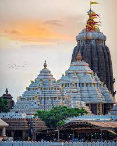
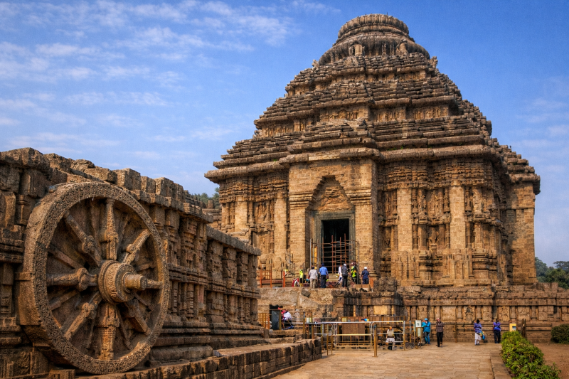
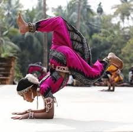

Odissi dance originated in the temples of Odisha, India specifically in the Jagannatha Puri Temple. Archaeological evidence, primarily carvings in Udayagiri, Konark, and Bhubaneswar, along with Jain manuscripts and Buddhist sculptures from the 1st century BCE to the 14th century CE, depict dance postures like Chauka and Tribhangi, revealing that the dance itself is far older than we perceive. The theory of Odissi comes from ancient scriptures such as Natya Shastra, Abhinaya Darpana, and Abhinaya Chandrika. Odissi was originally performed in the 9th century by Maharis -female dancers devoted to Lord Jagannath- as a spiritual offering. These performances were an integral part of the temple worship and religious ceremonies, especially in the dances based on spiritual works such as Jayadeva’s Gita Govinda. From the 12th century onward, foreign invasions and the eventual fall of Odisha’s independence in 1568 led to a decline in the ancient spiritual arts.
In response, the Gotipua tradition emerged in the 16th and 17th centuries under King Ramachandradeva’s patronage where young boys were trained in dance and martial arts. They dressed in feminine attire and performed acrobatics dances known as Bandha Nrutya during the influence of the devotional sakhibhava movement. This tradition persisted throughout the British suppression, keeping the Odissi dance alive. A cultural resurgence in the early 20th century, fueled by India’s freedom movement, reignited interest in traditional arts. Visionaries like Kalicharan Pattanayak led the modern revival of Odissi through the Jayantika Project in the 1950s and 60s, reintroducing female dancers and adapting the dance for the stage. The project ensured Odissi’s recognition as a classical dance form, preserving its sacred origins while shaping a modern performance identity.
